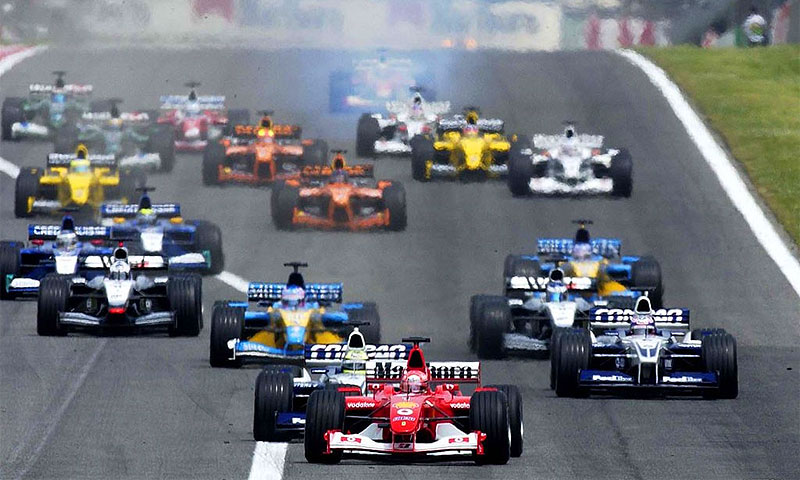
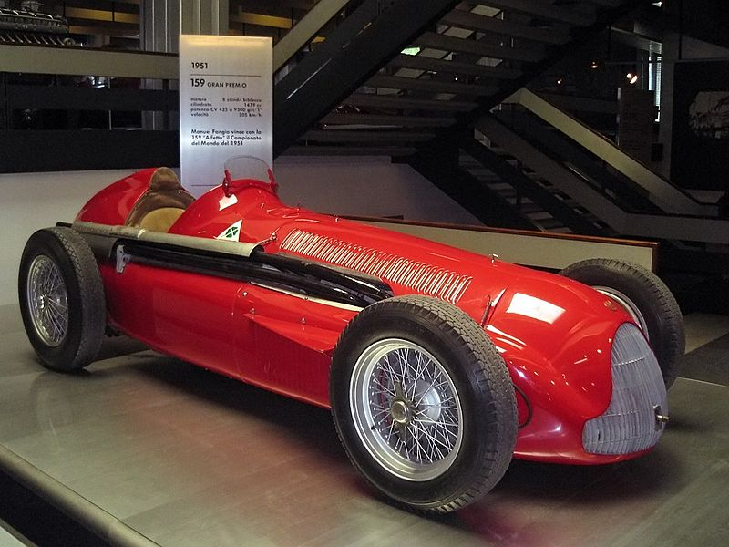

Формула-1» (повна назва: «Чемпіонат світу ФІА» — англ. FIA Formula One World Championship) — чемпіонат світу з кільцевих автоперегонів на автомобілях з відкритими колесами, який відбувається під егідою Міжнародної Автомобільної Федерації (FIA). Перш за все «формула» — це термін, який визначає набір правил, які обов'язкові до виконання всіма учасниками перегонів.
Чемпіонат світу у класі «Формула-1» відбувається щороку і складається з Гран-прі, або етапів, які проводяться на спеціально побудованих трасах, або підготовлених вулицях міста. Наприкінці сезону, за підсумками всіх гонок визначається переможець чемпіонату. У Формулі-1 змагаються як окремі пілоти, так і команди. Пілот-переможець отримує титул чемпіона світу, а команда-переможець отримує Кубок конструкторів.
Результати кожної траси оцінюються за допомогою системи балів для визначення двох щорічних чемпіонатів світу, один для водіїв F1 і один для конструкторів F1. Автогонщики, конструктори команди, спортивні чиновники, організатори та схеми повинні бути володарями дійсних Супер Ліцензії, найвищого класу гоночних ліцензії, виданої FIA.
Команди учасники змагань Формули-1 використовують гоночні автомобілі («боліди») власного виробництва. Тому для кожної команди вкрай важливо мати не лише швидкого і стабільного пілота та гарну стратегію, але й надзвичайно сильний конструкторський відділ. Наразі боліди Формули-1 розвивають швидкість до 360 км/год (хоча в останні роки FIA намагалась зменшити швидкість, впроваджуючи нові технічні правила), та здатні витримувати у поворотах перевантаження до 5 g. Кількість обертів двигуна обмежена до 15 000 об/хв., проте слід зазначити, що за всі роки свого існування Формула-1 постійно змінювалася. Історично основним центром розвитку Формули-1 є Європа. Більшість баз та дослідницьких центрів команд розташовано на цьому континенті. Однак, сфера спорту значно розширилася в останні роки і дедалі більше число Гран-прі проводяться на інших континентах.
Передумови гонок «Формули-1» з'явилися у 1920-х та 1930-х роках на перегонах Гран-прі Європи. Перед Другою світовою війною організаціями, які брали участь у Гран-прі, було сформульовано перший регламент чемпіонату. Планувалося, що він почне діяти у 1941 році, але через війну, що почалася, ці правила набули чинності лише у 1946 році.
Cформована Міжнародна Автомобільна Федерація (FIA), у 1946 році подала остаточно сформовані правила «Формули-1», які набули чинності у 1947 році. Цей рік і вважають початком ери «Королівських автоперегонів — Формула-1». Саме цього року відбулися змагання у класі «Формула А», який передбачав робочий об'єм атмосферних двигунів до 4500 см³, а оснащених компресором — до 1500 см³. Цей клас і став прабатьком першої Формули.
Вимоги до автомобілів класу «Формула А» дозволяли брати участь у перегонах автомобілям довоєнної розробки, таким як «Alfa-Romeo-158» або «Maserati-4CL».
У 1949 році Міжнародна мотоциклетна федерація організувала перший Чемпіонат Світу з мотоспорту, після чого «FIA» скористалася цим прикладом. Рішення про проведення чемпіонатів світу з автоперегонів у класі «Формула-1» було ухвалено «FIA» у 1949 році за ініціативою делегата від Італії Антоніо Брів Сфорца.
У 1950 році відбувся перший Чемпіонат Світу серед пілотів Гран-прі Формули-1. Попри те, що подібна серія вже запроваджувалася у 1920-х роках, історики автоперегонів не вважають раніші Чемпіонати Формулою.
Першим етапом, що увійшов до заліку Чемпіонату Світу 1950 року, був Гран-прі Англії та Європи, що відбувся 13 травня на колишньому військовому аеродромі в Сільверстоуні. Його виграв Ніно Фаріна на «Alfa Romeo», а його товариші по команді «Alfa», Луїджі Фаджіолі та Редж Парнелл, посіли друге та третє місця.
Іншими етапами, що увійшли до заліку Чемпіонату, були Гран-прі Монако, Гран-прі Швейцарії в Берні, Гран-прі Бельгії в Спа, Гран-прі АКФ (Автомобільного клубу Франції) у Реймсі та Гран-прі Італії в Монці, а також перегони «Індіанаполіс 500».
За системою нарахування очок, що спочатку використовувалася в Чемпіонаті Світу, вісім очок здобував переможець кожного залікового етапу, шість — учасник, що посів друге місце, чотири — третє, три — четверте і два — п'яте. Додаткове очко надавалося гонщику, що проїхав у гонці найшвидший круг. Систему було змінено у 1953 році, коли одне очко став здобувати гонщик, що посів шосте місце, потім — у 1960 році, коли очко за найшвидший круг було скасовано, і у 1961 році, коли кількість очок за перемогу, було збільшено до дев'яти. До 1957 року гонщики, що поділяли між собою кермо одного автомобіля, ділили між собою і здобуті очки; після 1958 року у випадку, якщо автомобілем керувало більше одного гонщика, очок вони не здобувають.
Джузеппе Фаріна і Хуан Мануель Фанхіо на пару виграли всі етапи, що увійшли до заліку Чемпіонату 1950 року (окрім перегонів в Індіанаполісі), і перший Чемпіонат Світу з 30-ма очками виграв Фаріна, другим був Фанхіо з 27-ма, а Фаджіолі з 24-ма очками — третім.
Гран-прі Формули-1 охоплює вихідні і починається з вільних заїздів, що проводяться протягом трьох сесій, кваліфікації, яка відбувається в суботу, та самих перегонів, які проводиться у неділю. Зазвичай, дві сесії вільних заїздів (тривалістю по 1,5 години) проводяться в п'ятницю, одна (тривалістю 1 годину) — у суботу, перед кваліфікацією. На Гран-прі Монако перші 2 сесії відбуваються в четвер, а остання, так само як зазвичай — у суботу. Протягом вільних заїздів гонщики проїжджають трасу у вільному, комфортному для них режимі, щоб ознайомитися з трасою й налаштувати болід. На кожному Гран-прі від однієї команди можуть виступати 2 пілоти у кваліфікації і гонці. Крім того у вільних заїздах у п'ятницю команда може задіяти третього пілота, але брати участь у ній можуть лише дві машини.
У разі хвороби або інших поважних причин третій пілот може замінити у кваліфікації й перегонах одного з основних пілотів команди, але третій пілот може бути допущений до перегонів тільки якщо він брав участь у кваліфікаційних заїздах. Очки, набрані запасним пілотом в гонці, будуть нараховані на його особистий рахунок у чемпіонаті світу; у боротьбі за Кубок конструкторів ці очки будуть додані до рахунку команди, якщо б за неї виступав основний пілот. Протягом сезону за одну команду можуть виступати, набираючи для себе і для неї очки, до 4 пілотів.